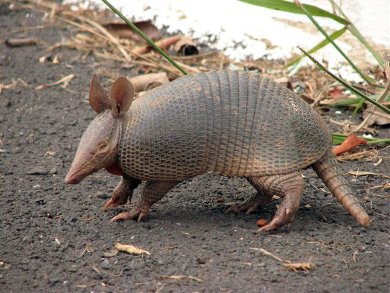
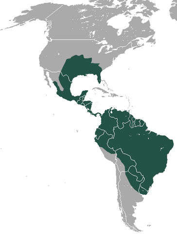

Tatu galinha
Nome científico:(Dasypus novemcinctus Linnaeus, 1758)
Nome comum: Tatu galinha, tatu verdadeiro.
Classificação biológica:
Domínio: Eukaryota.
Reino: Animalia.
Filo: Chordata.
Classe: Mammalia.
Ordem: Cingulata.
Família: Dasypodidae.
Gênero: Dasypus.
Espécie: Dasypus novemcinctus.
Nutrição: Onívoro.
Hábitos alimentares: Alimenta-se de insetos, larvas, pequenos vertebrados, frutas e vegetação. Utiliza seu focinho alongado e garras fortes para cavar em busca de alimento.
Morfologia do corpo: Possui uma carapaça óssea que cobre o dorso, composta por placas articuladas. Mede entre 40 e 60 cm de comprimento, com uma cauda de 25 a 40 cm. Pesa entre 3 e 6 kg. Sua pelagem é escassa e de cor marrom-acinzentada.
Comportamento: É um animal solitário e noturno, passando a maior parte do tempo cavando em busca de alimento ou abrigo. Quando ameaçado, enrola-se em uma bola, protegendo-se com sua carapaça.
Principais Presas: Insetos, larvas, pequenos vertebrados, frutas e vegetação.
Principais Predadores: Onças-pintadas, jaguatiricas, cobras e aves de rapina.
Locais habitados
Distribuição: Presente em todos os biomas brasileiros.
Habitat: Habita áreas de florestas, savanas, campos e áreas semiáridas. Prefere locais com solo arenoso ou argiloso, que facilitam a escavação.
Reprodução: A reprodução ocorre durante o ano todo, com gestação de aproximadamente 120 dias. A fêmea dá à luz de 4 filhotes idênticos (poliembrionia), que são amamentados por cerca de 2 meses.